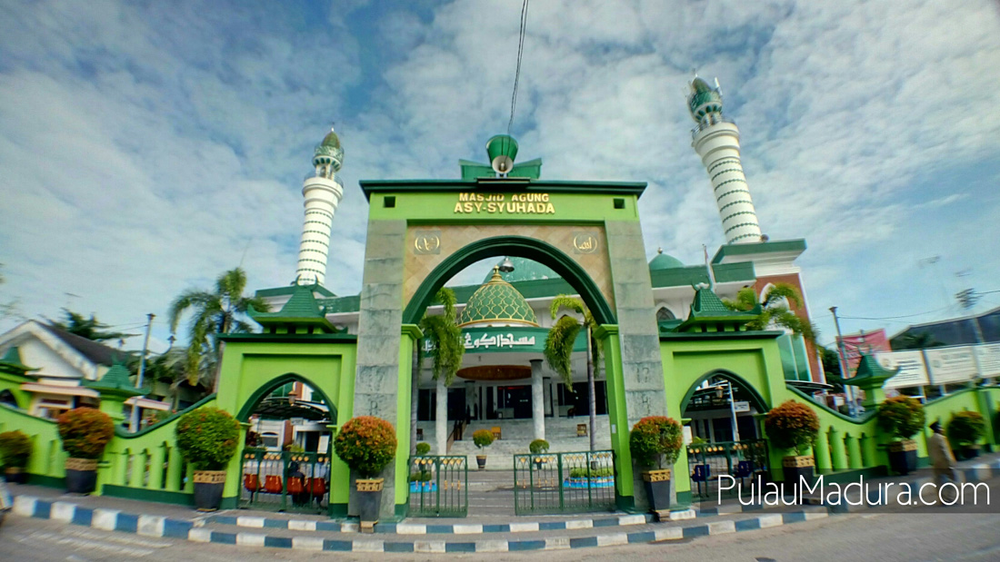

Pamekasan Madura yang kian bersinar, menawarkan pesona wisata yang tak terlupakan. Di balik gempuran pantai-pantai indah di pulau garam ini, Pamekasan menyimpan ragam destinasi memukau yang siap memanjakan mata dan jiwa. Panduan wisata lengkap ini akan mengantar Anda menjelajahi 6 yang paling populer di Pamekasan, mulai dari pantai eksotis, bukit menawan, hingga wisata keluarga yang seru. Siap-siap untuk terpesona dengan keindahan alam dan budaya Pamekasan yang kaya.!
Lihat SelengkapnyaNikmati kemewahan tanpa batas, tempat sempurna untuk liburan impian Anda. Rasakan kenyamanan istimewa, layanan prima yang tidak terlupakan. Penawaran eksklusif hanya untuk Anda, pesan sekarang dan dapatkan diskon menarik!
Lihat Selengkapnya
Menurut kamu, apa yang identik dengan kuliner khas Madura? Soto dan sate-nya? Jika itu menjadi jawaban kamu, nilai 100 pantas kamu dapatkan. Dua kuliner tersebut memang memiliki kesan mendalam terkait Madura. Bukan hanya karena cita rasa soto Madura dan sate Madura yang memang begitu menggoda, tapi juga karena kemudahan mendapatkan dua sajian ini. Malahan, jika kamu perhatikan, hampir setiap kota di Indonesia memiliki penjual asli Madura yang menyajikan duo kuliner maknyus tersebut.
Lihat Selengkapnya
Monumen Arek Lancor ini berada tepat di tengah kota Pamekasan di apit oleh dua bangunan rumah ibadah, yakni Masjid Agung Asy Syuhada’ Pamekasan yang berada di sebelah barat dan Gereja Maria Ratu Para Rasul yang berada di sebelah timur. Dari sini saja sudah jelas terlihat dan bisa di gambarkan bagaimana tingginya sikap toleransi yang berada tumbuh di tengah – tengah masyarakat Kabupaten Pamekasan.
Last updated 3 mins ago
Masjid Agung Assyuhada Pamekasan yang memiliki nilai sejarah atas perjuangan para mujahid dalam melawan penjajahan Belanda di Pamekasan. Masjid ini beberapa kali dilakukan renovasi sampai berdiri megah seperti saat ini.
Last updated 3 mins ago
Itulah Beberapa Daftar Rekomendasi Wisata Yang Dapat Saya Berikan.
Kembali Keatas